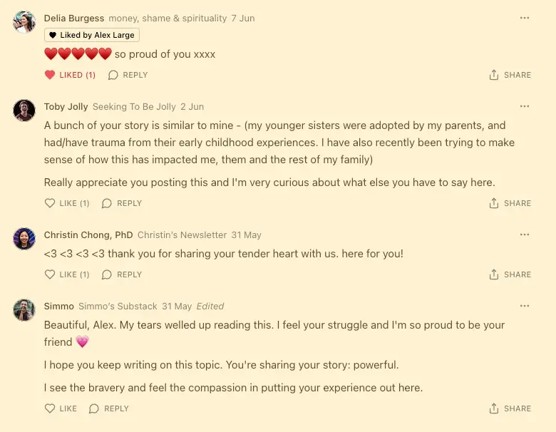

Inspired by my friend Delia’s shame series, I want to write my own shame series.
I want to write a series of blog posts about the thing that has been on my mind constantly, every day, for years, that I’ve felt like I can’t talk about in public.
Enough time has passed with this not working, living with what feels like this huge elephant in the room, that it’s time for me to just get it out. So here goes. I want to publish this quickly in an unpolished state to get the ball rolling. I’m not aiming for high art here; I just want to finally talk about this. I have a strong sense that to finally say this will allow me to move on in a significant way, to open my heart again, to forgive my family and myself.
It feels deeply cringe to me to complain about your family. Complaining about your parents, in particular, feels so trite, so cliche, so millennial. Entitled, blasé, weak. Disempowering, lame, un-adult.
However. Good god do I have mixed feelings about my family.
Well, the truth is that I have mostly negative feelings. But I think that there actually are positive feelings underneath, and I’ve just reached a point where the unspoken bullshit, the need to yell “this is ridiculous and you’re all fucking losers”, has grown to the point where it obscures any good. I get more jaded and pissed off every year, and the more I grow, the more furious I am at my family for being stagnant.
(I know there’s a lot of nuance here, and that’s what I think I’ll explore over this series. I’m not a spoiled, myopic teenager, who believes that the world revolves around them, and doesn’t feel any compassion for their family. I understand why they all are the way they are. I understand (at least partially) trauma, poverty, depression, the ideas of coherence therapy and IFS and coping the best you can, the idea of enormous blind spots that develop to protect you from obvious truths that could truly break you if fully faced (I’ve been there, and it is terrible). But I also often feel appalled at the lack of agency, at the normalisation of profound stagnation, the insane refusal to do anything, anything, that could help)
It doesn’t start with my parents, or their parents. I come from the working class; my grandad was a coal miner. My dad’s siblings include alcoholics, drug addicts, and one suicide. My mum’s side has a recurring theme of depression, failed marriages, deep poverty, deep alienation. I have an adopted sister with borderline personality disorder, whose biological parents exist in the world of council estates, benefits, violence, schizophrenia.
When I was 6, my parents decided to adopt a child. Noble reasons; they loved me so much that they wanted to give another child the same experience.
Various family members have told me that they had strong misgivings about this at the time, as my parent’s relationship was very rocky, and the family members thought that maybe my parents were doing this as a hail Mary. My grandma said that she regrets not being more honest with the care workers. But no one spoke up, so they signed the paperwork and adopted a little girl.
It seems that they were entirely naive to how difficult this would be. In fairness, this was around the year 2000, and I imagine that words that are now so quotidian like “trauma” were not at all in the lexicon. So I imagine they had a sense that everything would be straightforward and rosy.
I was distraught to hear that they were adopting a child. I deeply felt like this was because I wasn’t enough for them - I remember crying many nights, and them comforting me, and just feeling terrible, truly wretched and abandoned. It seems odd to me that I had no say in the matter, but I suppose as a parent, maybe you don’t put much weight on your 6 year old’s opinions on such matters - they don’t have the brain or world model to really understand this stuff. It’ll work out in the end, you’d think.
So they adopted a child. She was incredibly difficult from day one. Of course she was - she had had an awful time. The only child in her family to be physically abused. Taken away from her siblings and parents and put into foster care at the age of 4. (This is part of what has made me feel so torn about talking about this, and understanding my role in this story - it has felt obvious that she is the true victim here, that my suffering has been dwarfed by hers. But then, that’s not a thing, a “true” victim vs secondary victims - we’ve all suffered.)
As an adult, she has been diagnosed with borderline personality disorder, and it’s very likely that she has ADHD, OCD. Trauma brain, basically, of course. But for me as a kid, and for my uninformed and emotionally immature parents… we didn’t understand this stuff. The sense was just “holy shit, she’s so fucking difficult, she is so so difficult”. She struggled immensely at school. She was very difficult to deal with.
A year after adopting her, my parents split up. This boggles my mind, that two adults, older than I am now, could decide to do such a huge thing, and a year later, throw in the towel.
So now it’s me, my adopted sister, my mum, in our house. My mum hates my sister. She is very nasty to her, the way she speaks to her is appalling. She just can’t understand why she is so incredibly difficult, so needy, so explosive, so volatile, sensitive, fragile. Trauma brain, obviously. But sadly, this just doesn’t seem to have been something that my mum really, truly grokked. If she’d truly had a sense of how hard it would be, there is no way she would have gone ahead with it. So my mum is also a huge victim here. And she has the pain of knowing that it was her and my Dad who did this, it was their naivety that armed this bomb. “This will save our relationship. This will be good for our family”.
So, in short, that was my childhood. I lived with my mum and my sister. They fought constantly. I fought with my sister constantly. I hated her. “I never asked for this”. “I don’t understand why she’s like this”. “Why can’t she just be normal”. She is infuriating. I am so angry. I live in my room. I play video games. I learn to cope, I am dragged to things. I have no agency; I learn to endure. I lose the uncomplicated relationship that I had with my parents — they have split up, and when I see them, my adopted sister is there too. Things will never be the way there were. We go to my dad’s at the weekends. He has a violent, alcoholic period. He is emotionally neglectful, he gets into unhealthy relationships and we have to witness his fighting. One night we have to hide at his friend’s house because he is drunk and in a rage.
Why now?
This is on my mind, always, because these dynamics are still playing out. I am 28 now, more than 20 years have passed. My sister is a single mother with borderline personality disorder. She receives government benefits, she can’t drive and will never learn to, she is stubborn and fragile and sweet and good-hearted despite it all.
My mum still doesn’t get it. She still rants about my sister in a way that shows that she just can’t accept that of course she’s this way, of course she’ll never change, she has trauma brain. My sister did 2 years of government-funded therapy that didn’t do a damn thing, because we just don’t have the technology for this kind of thing, but also, just have to have a growth mindset for this kind of thing to work, you can’t do 2 years of therapy and be fixed if you don’t actually engage.
And my mum is exhausted and obese and hasn’t dated anyone since my dad and will never lose weight or do anything new or go to therapy with my sister or improve her life in any way. She’s watched 4 hours of TV a night for 20 years, eaten her feelings, and made do. She is lonely and has a codependent relationship with my sister, giving her lifts to places, seeing her a few times a week, filling the time, but also being driven constantly mad by her stubbornness and lack of growth.
And my dad — I don’t have a relationship with my dad. That’s a whole other story, but from my teenage years onwards we only had a sham relationship, a one-sided “go to the pub, listen to him monologue about himself for 2 hours, he asks me a single question about myself and then goes back to talking about himself two sentences later” relationship. He doesn’t know a thing about me, truly. When I went from earning £27k/year to $120k/year (literally the most exciting time of my life, going from a very mid data analyst to ‘head of shared knowledge’ at a beautiful effective altruist biotech startup), it made no impression on him at all. It was then that I realised that I could do anything, I could become prime minister, and it still wouldn’t pierce the armour around his heart. At the end of last year I wrote him a letter telling him how I feel about him, and we haven’t spoken since.
It’s lonely. It has been deeply lonely. I am much more intelligent than my mum or my sister, we have very little in common. My dad doesn’t know me; he seems incapable of being interested in me. The generational trauma didn’t start in my household; everyone is struggling. I don’t have a single family member who I’m not infuriated by.
So this is where it comes from. I have a burning passion to learn, grow, get away from where I came from. For climbing out of the mud. And this has gotten me to places where I work with people who come from 2 parent households, with healthy relationships with their parents, parents who gave them advice. Generational wealth, and generational wisdom. I see my parents as anti-role models. I’ve had to figure everything out on my own (which is why it has taken me so long, is still taking me so long).
I’ve gotten to a place where I’m applying for fantastic jobs, and I know that I’m a good person: kind, intelligent, hard working, earnest, big-hearted, and I have friends who love me. Through an incredible, stunning, gorgeous series of events, I landed a fantastic job, met people who changed my life, people who helped me achieve ~stream entry and ~deep okayness, who radically changed my lived experience, deleted my social anxiety, gave me a permanent taste of enlightenment, beauty, peace. I did a Jhourney meditation retreat and deeply wept with gratitude for all the good in my life, all the happy childhood memories, the beauty that was (naturally) obscured behind all the clouds. The post-rat community has given me so much, I have friends who have changed my life, I have an insane amount of promise.
And I just want people to know that I’m not done yet. I’m not there yet. It has been a long, lonely, painful road. But not anymore; now, I can honestly say that I love it here. I love it here. This life is a gift, and I’m happy to be me. I’m proud of myself, and I’m deeply grateful for everyone who has helped me. I will keep climbing. I’m really proud of where I am. I’m really excited to keep going.
Appendix
